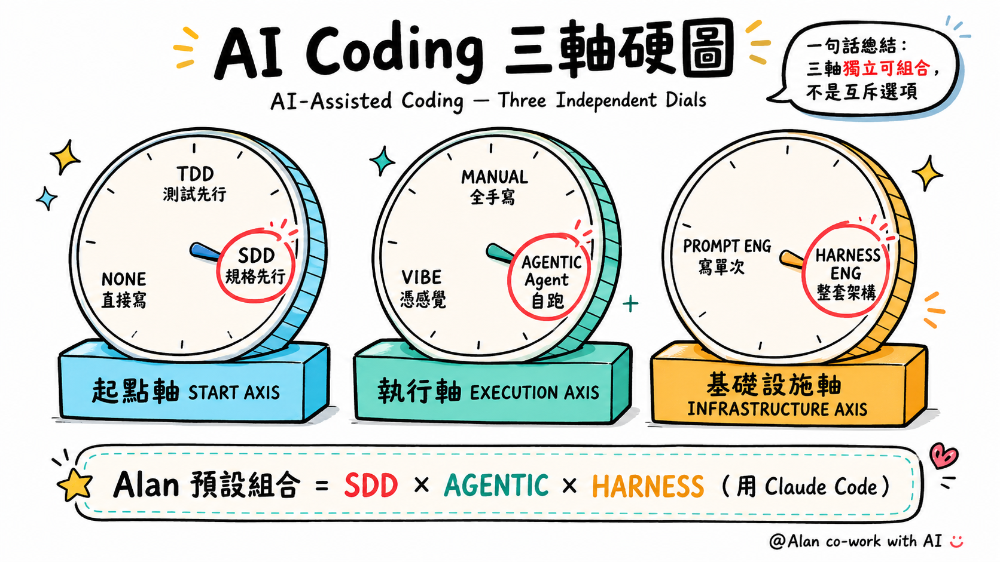
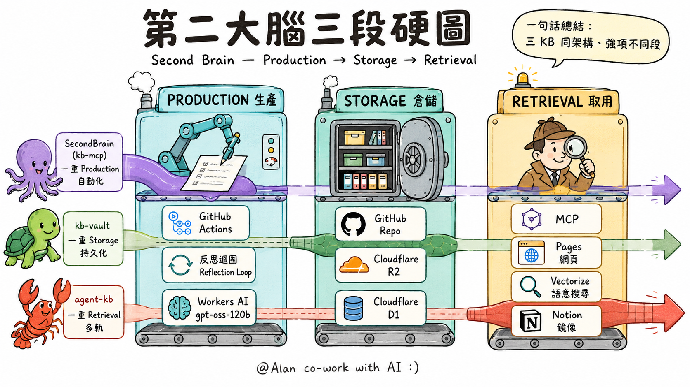
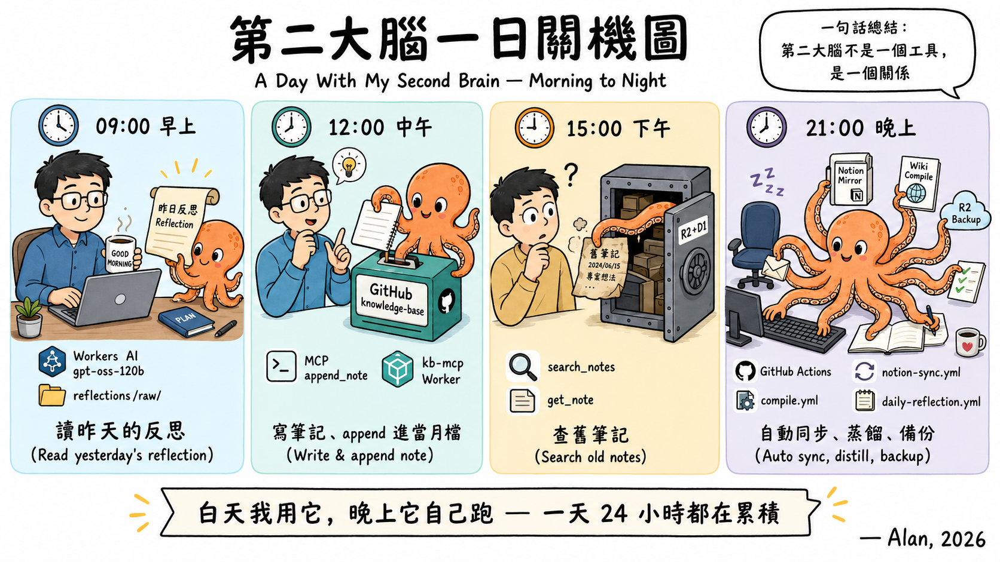

Vibe Coding 學習路徑｜Stage 1
這兩天處理的是第一層能力：
把需求說清楚、讓 AI 產出、判斷結果、修正到可交付
AI 應用其實是一座 7 層的山，今天我們先站在哪裡？
↑ 上層依賴下層，像蓋房子從地基往上蓋
破題 2 / 4 · 方法
三軸獨立可組合 — 今天我們先學執行軸的 VIBE 立場

起點軸（TDD / SDD / 無）× 執行軸（Manual / Vibe / Agentic）× 基礎設施軸（Prompt / Harness）
這兩天先在執行軸的 Vibe 立場打地基，其他兩軸後續課程
破題 3 / 4 · 實例
三隻動物 = 三套個人知識系統，不是工程師寫的，是一輪一輪累積的

章魚 SecondBrain（kb-mcp）重 Production / 烏龜 kb-vault 重 Storage / 龍蝦 agent-kb 重 Retrieval
每隻動物擅長一段，組合起來就是個人知識基礎設施
破題 4 / 4 · 24h 累積
個人 AI 不是工具，是 24 小時累積的伙伴

09:00 讀昨日反思 → 12:00 寫筆記 append → 15:00 查舊筆記 → 21:00 睡覺它還在跑
反思迴圈、自動同步、蒸餾、備份都在後台 — 而起點，是兩天後你會建立的第一層能力
同樣用 AI，兩種使用方式產生的價值不同
單次提問 → 單次回答
結果停在參考資料
沒有驗證、沒有下一步
先定義需求
設定格式與限制
用可檢查的標準修正產出
本課程要建立的是第二種使用方式
每個節點都有對應的判斷與技能。
這兩天的四個模組，依序建立這四個節點的處理能力。
學過 AI 課但用不上的結構性原因
會用自然語言聊，
但無法把需求拆成
可被 AI 執行的結構
看得到 AI 給的結果，
但缺乏判斷它
能不能用的標準
不滿意產出時，
除了重問一次，
沒有其他處理方式
本課程的四個模組，依序處理這三個缺口。
不要求學員
讀懂或撰寫程式碼
不教 ChatGPT / Claude
介面點選的固定流程
不背特定話術，
建立判斷指令
結構好壞的能力
工具會迭代，介面會改版，特定話術會失效。
課程的設計，是讓 AI 工具更換時，建立的判斷框架仍然適用。
每一輪都從操作開始、回到驗證結束。
學員學會的不是某個單一技巧，而是面對新工具時的工作流程。
| 輪 | 操作內容 | 建立的能力 |
|---|---|---|
| R1 | 用原本的方式請 AI 做網頁 | 看見目前的能力水位 |
| R2 | 引入指令四要素，重做一次 | 需求結構化 |
| R3 | 加入介面判斷五項 | 產出判斷 |
| R4 | 跨平台比較與邊界辨識 | 工具選擇 |
| R5 | 挑戰互動產品 | 需求描述顆粒度 |
| R6 | 回顧與多維評估 | 迭代修正 |
3 小時內走完六輪，等於六次「操作 → 觀察差異 → 引入方法 → 驗證」的完整循環。
每一類卡點對應不同的處理方式，不是同一個解
AI 產出方向錯誤
→ 回到指令四要素，
檢查角色 / 任務 / 格式 / 限制
AI 理解了但格式錯
→ 補充輸出範例或限制條件
產出有錯誤訊息或不能運作
→ 描述具體失效狀況，
讓 AI 修正
產出能跑但不知好壞
→ 引入 UI/UX 五判斷點
或同類經典範例對照
第一輪先用原本的方式操作，
目的是看見目前的能力水位。
結構與技巧在第二輪才引入。
不要求背程式語法，
建立的是判斷輸出品質的標準。
標準可遷移到其他工具與情境。
同學作品作為案例使用，
分析的是指令結構與產出的因果關係，
不對學員個人能力做比較。
以 M1-4 為例：從表單到通知的一條資料流
不是案例本身的趣味，是資料如何被接住、處理、觸發下一步。
相同結構可套用到報名表、訂單系統、回報流程等多種場景。
結構特徵：欄位定義 → 限定選項 → 觸發送出
| 時間 | 姓名 | 品項 | AI 分類 |
|---|---|---|---|
| 10:23 | 小明 | 珍奶 正常 少冰 | 茶類 |
| 10:25 | 小華 | 咖啡拿鐵 無糖 | 咖啡 |
| 10:28 | 小芳 | 烏龍綠 半糖 | 茶類 |
| 10:31 | 小英 | 紅茶拿鐵 全糖 | 茶類 |
資料逐筆累積 + AI 依品項內容自動歸類，產生可分析的結構
四個層次串成一條資料流：表單接收 → Sheet 儲存 → AI 分類 → Telegram 推送。
這是 M1-4 結束時學員會建立的成品結構。
| 模組 | 主題 | 建立的能力 |
|---|---|---|
| M1-1 | AI 對話做作品 | 需求結構化、判斷標準 |
| M1-2 | 封裝 AI 助手 + 圖文 | 從一次性對話到可重複調用 |
| M1-3 | Google 自動化 | 跨服務串接、資料處理 |
| M1-4 | 完整服務 | 多層次系統整合 |
每一個模組在前一個模組的能力基礎上擴展，能力可累積。
確認產出可以被打開、
展示與檢查。
保留讓作品成形的
主要 prompt，
方便下次重用。
記錄 AI 哪裡做錯、
你如何描述問題、
最後如何修正。
這三項材料是下一堂 M1-2 的工作基礎。
把一次性的對話封裝成可重複調用的 AI 助手，需要這些材料。
長文本處理
結構化指令
程式碼相關任務
通用對話
圖像產出
多模態任務
Google 服務整合
長 context 處理
免費 API 額度
學員會在課程中分別使用三個平台。
選擇依據是任務性質，不是平台優劣。
M1-1 AI 對話做作品
M1-2 封裝 AI 助手 + 圖文
10:00 - 17:00
M1-3 Google 自動化
M1-4 完整服務
10:00 - 17:00
每個模組 3 小時，包含六輪循環的完整操作。
課程範圍
結束時帶走 4 件可運作的成品
跟一套可遷移的指令設計方法
第一個操作從 M1-1 起手